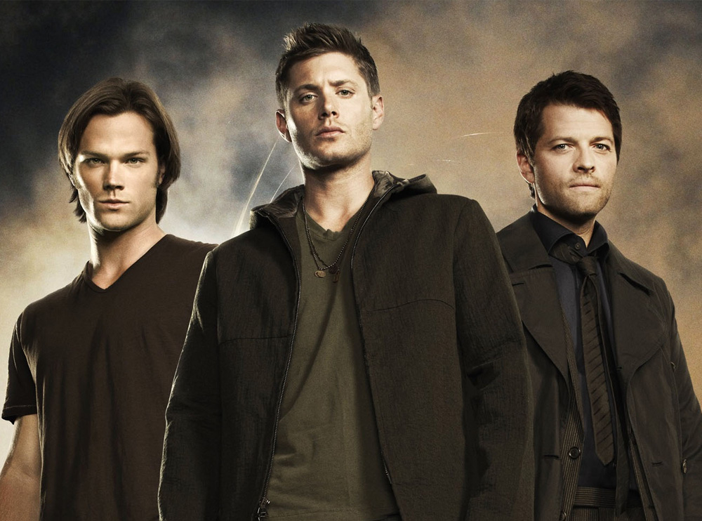

"Saving people, hunting things, the family business."
The series follows brothers Sam and Dean Winchester as they travel across America in their 1967 Chevy Impala, hunting supernatural beings including ghosts, demons, and urban legends. What begins as a search for their missing father evolves into an epic battle between heaven and hell, with the brothers frequently finding themselves at the center of cosmic events while relying on their unbreakable bond to survive.